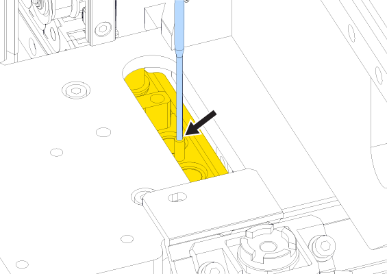
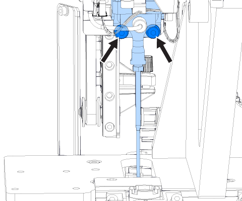
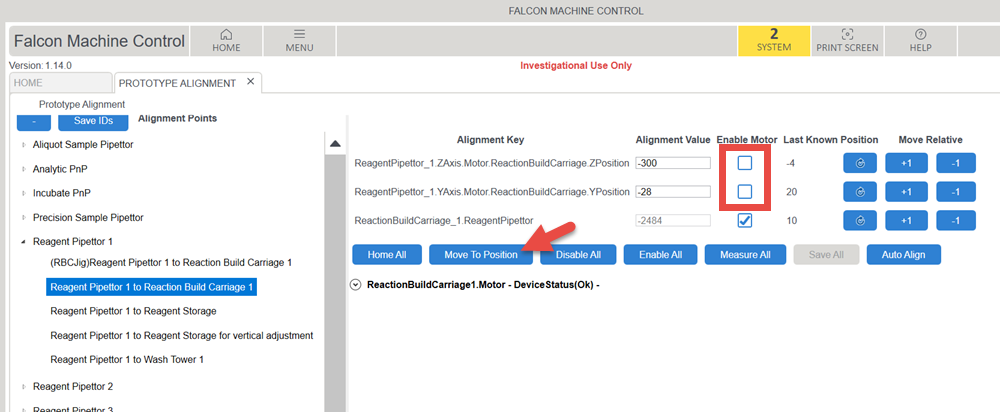
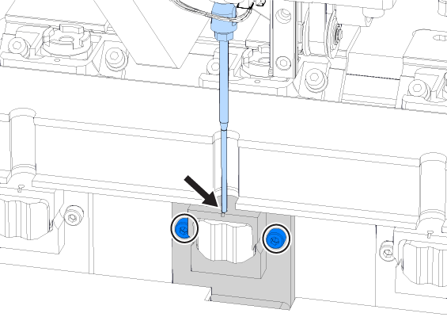
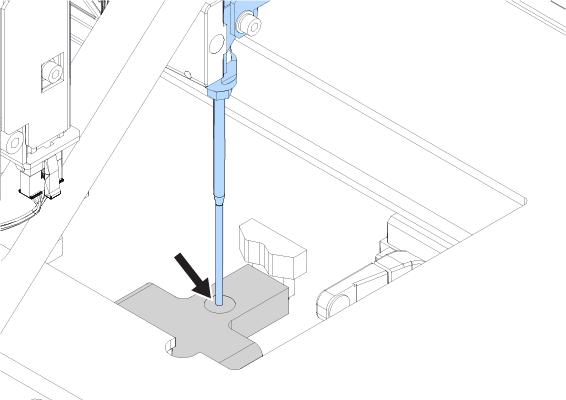
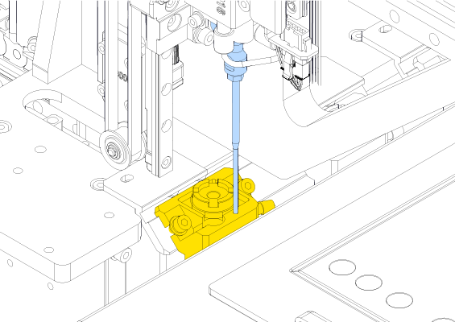
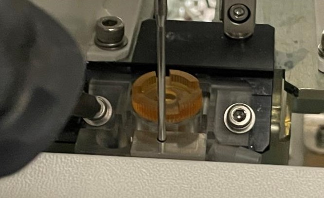
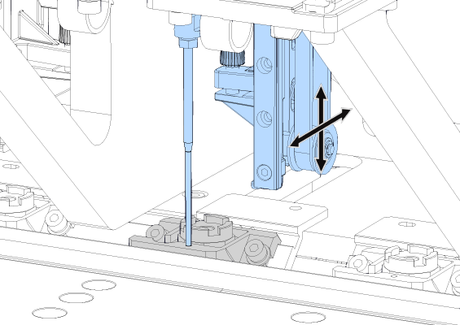
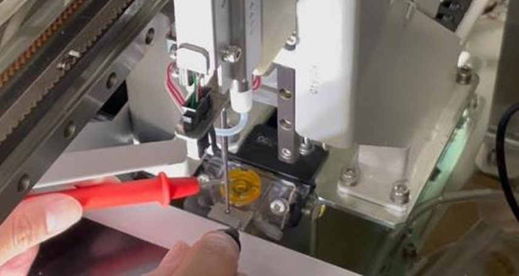

This topic includes information about how to adjust and align the reagent pipettor.
Safety Reminder
Servicing the DxI 9000 instrument involves potential risks for pinch and puncture, electrical shock, and exposure to hazardous materials. You must mitigate these risks by taking appropriate countermeasures. See
Safety for more information.
Prerequisites
Before you begin an alignment procedure:
If you must make changes to the instrument's hardware, you must complete those changes before you prepare the instrument for adjustments and alignments.
You must verify that alignments have previously been completed on the instrument. To verify, in the Machine Control App go to
Menu > Prototype Alignment to open the Prototype Alignment page and to verify the
Finalize Instrument Alignments button is
GRAY in color. If the button is
BLUE in color, do not complete this procedure. Instead, you must first complete manual alignments.
You must first initialize the instrument to a
GREEN (Ready) status to ensure all subsystems have been successfully initialized and homed. You must then enter the instrument into a
BLUE (Maintenance) status.
Table of Contents
Refer to the table below for instructions to align each reagent pipettor to it's applicable alignment points.
Note: If the instrument enters into a
RED (Stopped) status:
Verify the interlock switch is in the correct position.
Be sure you are signed in to use the BeckmanAdmin account.
In the Console App go to
Menu > Tools > Diagnostics > Intrusive Diagnostics and select
Start Session.
Complete all troubleshooting, adjustments, manual alignments, and maintenance necessary to be able to initialize the instrument to a
GREEN (Ready) status.
Select the
SYSTEM RUNNING button and go to
Stop > Pause to enter the instrument into a
YELLOW (Paused) status.
Adjusting the Reagent Pipettor for Perpendicularity (X-axis)
Perform this adjustment if the reagent pipettor is found to be out of alignment in the X-axis (perpendicularity):
Note: This adjustment should not be needed in most cases, only perform if it is truly required.
In the Console App go to
Menu > Tools > Diagnostics > Intrusive Diagnostics and select
Start Session.
In the Machine Control App go to
MENU > Prototype Alignment to open the Prototype Alignment page.
Go to
Reagent Pipettor # > Reagent Pipettor # to Reaction Build Carriage #.
Disable the Reagent Pipettor Y and Z-axis motors, and select
Move To Position.
The carriage should move forward to the alignment position, manually move the reagent pipettor tip to the alignment post on the carriage.
Figure 245: Reagent Pipettor Tip and Alignment Post

IF the pipettor tip is centered on the alignment post in the X-axis (left/right),
THEN the adjustment is complete, proceed to the next section.
IF the pipettor tip is
NOT centered on the alignment post in the X-axis (left/right),
THEN proceed to the next steps to adjust the perpendicularity.
Loosen the two screws securing the pipettor to the assembly.
Figure 246: Pipettor-to-Assembly Screws

Manually move the pipettor assembly left or right so that it lines up with the alignment post on the carriage, and then secure in place by tightening the two screws.
Select
Home All.
Repeat steps 2 and 3 above and confirm the pipettor tip is centered on the carriage alignment post in the X-axis. Repeat adjustment again if needed.
Aligning the Reagent Pipettor to the Reagent Shuttle/Build Carriage
Important: Reference the decision table below to ensure the correct alignment method is used based on the system configuration:
IF
THEN
Mod 12772 (Software Version 1.13.1 with Reagent Carriage - Install)
is complete
Proceed to steps below for reagent pipettor to reagent carriage alignment.
Mod 12772 (Software Version 1.13.1 with Reagent Carriage - Install)
is not complete
In the Console App go to
Menu > Tools > Diagnostics > Intrusive Diagnostics and select
Start Session.
In the Machine Control App go to
MENU > Prototype Alignment to open the Prototype Alignment page.
Go to
Reagent Pipettor 1 > Reagent Pipettor 1 to Reaction Build Carriage 1
Select
Home All.
Disable Z-axis and Y-axis motors by clearing the checkboxes, then select
Move To Position.

Move the probe top so that it contacts the center of the alignment post on the carriage.
Note: If it is not centered in the X-axis (left/right), return to the previous section to adjust for perpendicularity.
Figure 247: Probe on Alignment Post
Select
Measure All.
Select
Save All.
Select
Auto Align. If auto-align fails, repeat steps above.
Once the auto-alignment completes a pop-up should display "Save Successful", select
OK.
Repeat for additional reagent pipettors/carriages as needed.
Aligning the Reagent Pipettor to Reagent Storage (Pipetting Nest)
In the Console App go to
MENU > Tools > Diagnostics > Intrusive Diagnostics and select
Start Session.
Remove the reagent storage pipetting nest cover to gain access to the pipetting nests.
In the Machine Control App go to
MENU > Prototype Alignment to open the Prototype Alignment page.
Go to
Reagent Pipettor [1-4] > Reagent Pipettor [1-4] to Reagent Storage.
Select
Home All.
Select
Disable Motors and move the reagent pipettor to the reagent storage pipetting nest alignment indent (see arrow in image below). Ensure the probe tip seats fully into the indent.
Note: If the pipetting nest indent is not centered in the x-axis (left/right), loosen the two screws (circled in image below) and move the nest so that the indent is centered.
Figure 248: Reagent Pipettor and Nest Alignment Indent

Select
Measure All.
Select
Save All.
Select
Reagent Pipettor [1-4] > Reagent Pipettor [1-4] to Reagent Storage for Vertical Adjustment.
Select
Home All.
Select
Disable Motors and move the reagent pipettor forward and down so that it contact the circular area at the front of the pipetting nest.
Note: Pipettor does not need to be centered in the circular area as this alignment value is for vertical adjustment only. Some earlier systems may not have the circular area, in this case move the pipettor forward and down as far as it will reach so that it is contacting the pipetting nest at the forward most position.
Figure 249: Circular Area at the Front of the Pipetting Nest

Select
Measure All.
Select
Save All.
Aligning the Reagent Pipettor to the Wash Tower
Note:
Perform the following steps for one reagent pipettor at a time. The procedure starts with reagent pipettor 4.
In the Console App go to
Menu > Tools > Diagnostics > Intrusive Diagnostics and select
Start Session.
In the Machine Control App go to
MENU > Prototype Alignment to open the Prototype Alignment page.
Go to
Reagent Pipettor 4 > Reagent Pipettor 4 to Wash Tower 4.
Clear
Enable Motor for ZAxis Motor and YAxis Motor. The position of the reagent probe can be moved manually.
Move the wash tower and reagent pipettor manually so that the tip of the probe does not touch the metal hole of the wash tower.
Figure 250: Probe over Wash Tower Hole

Adjust the position of wash tower so that the metal hole is as centered as possible with respect to the probe and fix the wash tower. (The position of the probe can be adjusted later).

Adjust so the probe is located in the center of the metal hole as much as possible. Lower the tip of the probe until it touches the bottom of the hole. If the probe will not fit into the hole then the probe may be bent. Remove the probe if bent.
Figure 251: Probe Adjustment

Check the continuity between the metal part of the wash tower and the reagent probe with a multimeter. Lightly touch the top of the reagent probe and the plate.

If there is no continuity in step 6 then the wash tower and reagent probe are in the correct position. Proceed to step 8.
If there is continuity even after adjusting again, go back to step 3 and readjust from the wash tower.
If it is difficult to fine tune the position of the probe, you can use
Move Relative.
For each alignment key, select
Refresh to display the value for the
Last Known Position.
Select
Measure All. The value of the
Last Known Position will be entered and saved in the
Alignment Value box. The reagent probe will automatically return to the home position. .
Tip: You can also type the value of the
Last Know Position into the
Alignment Value box and select
Save All.
Perform same alignments on the rest of the pipettors to wash tower.
 to display the value for the
Last Known Position.
to display the value for the
Last Known Position.